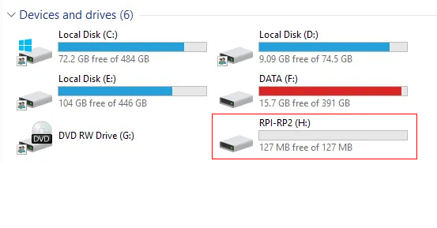
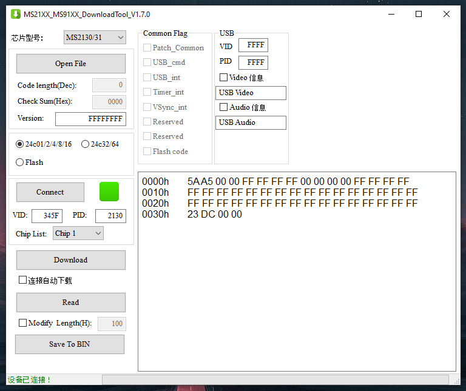

Открываем репозиторий разработчика HyperSPI, нам нужна страница релизных версий
(ссылка).
Скачиваем актуальный драйвер в зависимости от используемой платы (Rp2040 / ESP32 / Esp8266) и типа светодиодной ленты.
P.S.: В большинстве случаев если у вас будет классическое расположение светодиодной ленты на корпусе ТВ (начинается в одном из нижних углов, проходит по периметру корпуса и заканчивается в том же углу где и начиналась) и лента имеет 300 светодиодов (5 метров с плотностью 60/м) то стандартной прошивки будет достаточно.

В случае использования платы Rp2040 и LED ленты WS2812B, соответственно необходимо использовать прошивку:
HyperSPI_Pico_ws2812.uf2
Подключаем плату Rp2040 к компьютеру с помощью Type-C кабеля.
Далее необходимо перевести плату Pico в режим DFU, для этого нажмите и удерживайте кнопки "boot" и "reset", затем
отпустите кнопку "reset" затем отпустите кнопку "boot". В системном файловом менеджере вы должны найти новый диск с
наименованием "RPI-RP2"

Перетащите (или скопируйте) скачанную ранее прошивку на этот диск.
Pico автоматически сбросится после загрузки и через несколько секунд он будет готов к использованию с HyperHDR.
В моем случае используется многосегментный режим, который позволяет вдвое снизить задержку при передаче данных о цвете светодиода по линии передачи данных Neopixel (800 кГц). Лента состоит не из привычной одной полосы, а из двух равных отрезков с равным количеством диодов (к примеру мы имеем 5 метровую ленту с плотностью 60/м, общее количество диодов 300 единиц, в данном случае нам необходимо разделить целую ленту на два участка по 150 диодов).

Первый участок ленты начинается в центре нижней части корпуса ТВ и доходит до центра верхней панели, прокладывается по часовой стрелке. Второй участок прокладывается в обратном направлении навстречу первому участку, против часовой стрелки (обратите внимание на белые стрелки на LED ленте указывающие направление).
Для активации многосегментного режима необходимо отредактировать прошивку, пример описан на странице
(ссылка).
Необходимо отредактировать в файле "HyperSPI / rp2040 / CMakeLists.txt" следующие строки:
# Use multi-segment, starting index of second led strip or OFF to disable
set(SECOND_SEGMENT_INDEX 150)
# If multi-segment is used and it's reversed, set this option to ON to enable reversing
set(SECOND_SEGMENT_REVERSED ON)
Индекс начинается с нуля.
Первый сегмент это [0..149] => 150 светодиодов
Второй сегмент это [150..299] => 150 светодиодов
300 светодиодов прописываем в конфигурации HyperHDR, для него это единая лента.
Из данного поста автора HyperHDR скачиваем актуальную версию модифицированной прошивки
(ссылка).
В данном сообщении указаны ссылки на загрузку утилиты для прошивки нашего устройства, скачиваем ее
(ссылка).
Открываем скачанную программу, подключаем карту захвата в компьютер.
В окне после подключения устрйства вы должны увидеть зеленый квадрат (ранее был красным до подключения).

Нажимаем на кнопку "Read", далее "Save to BIN".
Сохраняем считанный файл с расширением *bin, на данном этапе мы сохранили резервную копию оригинальной прошивки.
Теперь звгрузим модифицированную прошивку, распакуем из *zip архива файл с расширением *bin.
В окне программы нажимаем кнопку "Open File", указываем путь до нашего файла, нажимаем "Download".
Ждем окончания процесса, в леом нижнем углу по окончании загрузки увидим сообщение об успешной прошивке.

На этом данный этап подготовки устройств к дальнейшей сборке закончен.